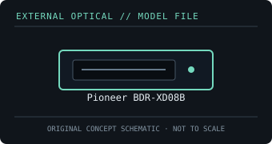

[ OPTICAL DRIVES // IDENTIFIED EXTERNAL MODEL ]
Pioneer BDR-XD08B
Portable tray-loading Blu-ray writer in the BDR-XD08 series. This model writes conventional and supported BDXL media; UHD Blu-ray playback is not claimed for this BDR-XD08B record.

IDENTIFICATION: Confirm the full model/suffix against the label and manufacturer documentation. Read capability is not write capability; speed ratings depend on media and recording mode.
Model-specific specifications
| Catalog subcategory | External Blu-ray drives |
|---|---|
| Exact product identifier | Pioneer BDR-XD08B |
| Supported write formats / rates | BD-R up to 6× (media-dependent, including supported BDXL/M-DISC media); BD-RE up to 2×. DVD±R up to 8×, DVD±R DL up to 6×, DVD-RAM up to 5×, CD-R and CD-RW up to 24×. |
| Supported read formats / rates | Reads BD-ROM, BD-R/RE and supported BDXL; BD-ROM up to 6×. Reads DVD-ROM up to 8× and CD-ROM up to 24×. Blu-ray read support is distinct from write support. |
| USB interface and power | USB 3.2 Gen 1 Type-C external connection with USB 2.0 backward compatibility; bus-powered portable unit. |
| Host compatibility | Compatible data operation requires a host OS with USB optical-drive support. Pioneer’s media list specifies tested recording media/speeds; playback applications and protected Blu-ray support are host/software dependent. |
| Model distinction | Identified by Pioneer as BDR-XD08B; its specifications should not be silently transferred to XD08-series variants or models with UHD playback branding. |
Host and media notes
Identified by Pioneer as BDR-XD08B; its specifications should not be silently transferred to XD08-series variants or models with UHD playback branding.
- Use the drive only with media types explicitly supported by the exact manual. BDXL, standard BD-R/RE and UHD Blu-ray are distinct capabilities.
- Check operating-system and playback/authoring application support independently; a USB connection alone does not provide Blu-ray codec, protected-video or UHD playback capability.
- For preservation work, record drive model/firmware, host interface, software, media type, checksums and read/verification errors with each image.
Model documentation and specification sources
- Pioneer BDR-XD08B owner’s manualExact model manual for supported media, installation and host operation.
- Pioneer — BDR-XD08 series writing-speed media listManufacturer’s media list for the XD08 family; media and rated speeds are conditional on disc type.
Manufacturer and manual speed ratings are maxima under supported media conditions and are not a guarantee of actual sustained read/write performance on an individual disc.